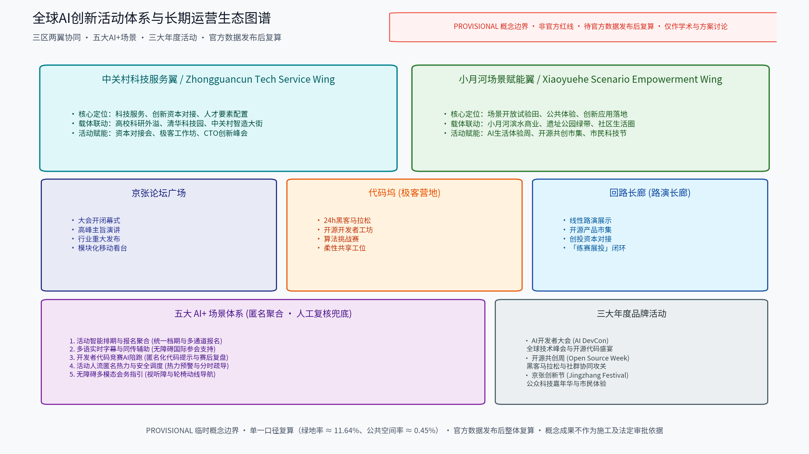

总览地图
总体空间结构依托百年京张铁路绿带骨架，形成「一带三台、两翼协同、多点赋能」的连续空间载体。

三层范围
严格按照任务书文本口径划分三层工作范围：统筹研究范围（约 43.6 平方公里，聚焦区域协同与未来城市研究）；总体设计范围（约 11.41 平方公里，11,412,825 ㎡，provisional 概念口径开展控规深度设计）；重点区域（合计约 368.4 公顷，聚焦京张论坛广场、代码坞、回路长廊三大节点）。
重点区域
详细设计覆盖三大原创核心活动节点：北区·众智园「京张论坛广场」、中区·AI原点社区「代码坞」、南区·大钟寺「回路长廊」，支撑开闭幕盛会、极客黑客松与路演市集全流程闭环。

用地分区
用地功能结构严格遵循单一口径统计，27 个图斑总和严格 100.0%：公园绿地 28.23%、科研用地 27.39%、商务金融用地 16.03%、商业用地 13.86%、文化用地 13.54%、城镇住宅用地 0.95%。杜绝重复分类。

交通慢行
坚持慢行优先原则，沿遗址绿带贯通约 10.15 km 连续慢行主轴，活动集散以轨道交通为主（依托五道口、清河站、知春路等枢纽），配置接驳专线与分时分区疏导预案，降低小汽车依赖。

蓝绿公共空间
构建「绿带为轴、节点公园为珠」的蓝绿公共空间体系，保留现状林带与历史肌理，绿地率达 green_ratio ≈ 11.64%（1,328,450 ㎡），公共空间率达 public_space_ratio ≈ 0.45%（51,350 ㎡），提升生态海绵韧性。
建筑
坚持留改拆并举：优先保留铁路遗址绿带与历史站房、工业构筑物；功能改造置换低效厂房与园区建筑为创新工坊与路演展厅；仅对经论证的零星危旧建筑实施微拆除。
更新项目
项目按骨架—节点—配套三类推进：近期 (1-3年) 贯通绿带、建成三大主台并启动三大年度活动；中期 (3-5年) 深化功能更新与轨道接驳；远期 (5-10年) 形成全线与两翼深度联动。
AI 场景
五大 AI+ 场景体系：活动智能排期与报名聚合、多语实时字幕与同传辅助、开发者代码竞赛AI陪跑、活动人流匿名热力与安全调度、无障碍多模态会务指引，均遵循匿名聚合与人工复核原则，禁止过度监控。

核心指标

任务覆盖
全案完整覆盖公告 1.3/1.4/1.5 及面向智能体任务书 agent.1—6 全部 23 项主控要求，详细映射见 compliance_matrix.json 与 standard_matrix.json。
自检状态
已通过 valroot 四门禁自检系统（确定性校验 PASS、空间审查 PASS、视觉包装 PASS、专业证据 PASS），结果完整记录于 self_check.json。
来源
全部数据与资料来源收录于 sources.json（包括官方公告、任务书、用地国标、AI生成内容暂行办法等可查证条目及自产 provisional 几何），未编造虚假数据。
假设
关键设计假设登记于 assumptions.json（共 6 项），包括 provisional 临时几何约束、法定控制待细化、客流概念聚合引用等，待官方数据发布后统一复算。